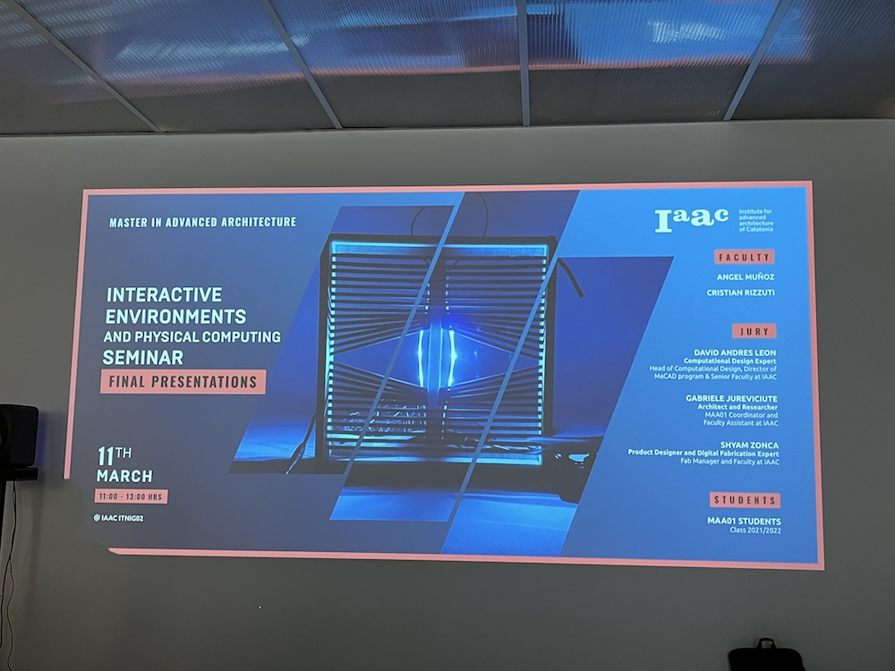

Weekly reflections
Documenting my Master's program, week by week
WEEK 8
Busy week!! + Design Intervention
The week began yet again with Atlas of Weak Signals on Monday. We discussed “Life after AI”, and aimed to define jobs, and how they could change in the future through automation and Artificial intelligence. I took lots of notes because I found these topics very interesting.
— pic

After that, we had yet another Xarxa nights talk, this time with Pippa and Paula Bustos presenting. The topics were very random, as usual, and out of our usual bubble. Pippa spoke about “the Passport Paradise” where she gave us an overview of Malta’s history and how the Maltese mafia has a system of selling illegal passports for 700,000euro. Paula, on the other hand, spoke about 2PAC and his life as an activist, rapper, controversial figure and lastly his conspiracy-filled death. I don’t know which of the two presentations I preferred, because they were so unique and engaging. I was happy that I got to bring my mom to the event, because she was delighted to see the types of activities we organise as a class.
To conclude the day, we had a seminar from Ron Wakkary again, where he discussed the importance of our projects’ impact on non-humans, and how everything around us both influences our projects, yet is also impacted by our projects.

On Tuesday, we summarized some key elements from Wakkary’s Future Talk from the previous night. We were encouraged to question what alternate futures we are creating through our interventions, and I definitely think I will incorporate this when reflecting on my future design interventions.
During the studio class, Roger & Jana presented the different ways of drifting and experimenting in a project. It was nice to compare and contrast the various methods, however I’m not sure how useful this information is to me at the moment, given that I am fully submerged in my projects. I believe it could be more useful up ahead once I’m out of the project building process and I have the clarity to observe patterns and trends within my field of interest.
Wednesday was another Fab Academy day, where we got introduced to the CNC. - link
After Wednesday's class, I went to the opening MUTEK event at the Roca gallery in Les Corts. Artist Robyn Moody was interviewed about his art piece, "Wave Interference", before showing us the piece. I found the even to be a bit disappointing because the artist was not a great presenter, which made the interview a bit boring, and because there was only one installation which was exhibited. The rest were just Roca sinks and toilets, which felt out of place for the Mutek festival.

Thursday, our Emergent Technologies class was canceled last minute, so I took the opportunity to discuss project ideas with Chris. We got permission from Chiara to do it on IAAC’s rooftop, managed to find a projector and came up with a wide to-do list to accomplish over the next few days.
The next day, we assisted the MAA01 Interactive Environments and Physical Computing Seminar Final Presentation at Itnig. It was interesting to see what kind of things the other Masters were up to, and it seemed like both the students and professors were surprised to see us join.

Friday was also the day I chose to hold my preliminary Rorschach Design Intervention, and I invited the MDEF class to join. I was happy to receive such great interaction and feedback from the participants. I will include the key takeaways I got from everyone in the next design studio update. In the meanwhile, here is the presentation I projected, and the notes of what I wanted to say.
In the afternoon, Chris and I worked together on the storyboard and music composition of the Artificial constellations project. This weekend, I plan on putting together the video concept we had, while Chris works on the music. Here are a few updates from that project:
Lastly, the abstract for the Making sense and Meaning course can be found here.